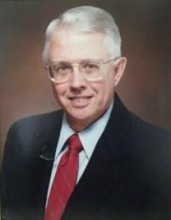

Please note: the AAS Obituaries are temporarily being hosted on this website while their full content is being ingested into the PubPub publishing platform newly adopted by the Bulletin of the American Astronomical Society. When the migration is complete, your existing links will take you to the final, migrated content. Contact peter.williams@aas.org with any questions.
William E. Howard, III (1932-2016)

William E. Howard III, the last living scientist of the group that began the radio astronomy program at the University of Michigan in the late 1950s – early 1960s, died on July 25, 2016. After a long career in astronomy, he went on to hold leadership and senior staff positions in U.S. government civilian, military and intelligence agencies, and in the non-profit sphere. Born in 1932, Bill is survived by his wife, the former Miriam R. Sitler, and by their children William and Jennifer, and their respective families.
His role in the American Astronomical Society
Bill Howard (hereafter, WEH) served as Associate Treasurer of the AAS in 1974 and as Treasurer (1975-1977). He turned a projected deficit to a balanced budget, redirected funds to accounts with greater yield, and began a practice of annual outside audits of the Treasurer’s office. He was also a generous donor to AAS. In particular, he gave the Society three historic gold medals that were originally awarded to John Herschel, including one, bestowed by the Royal Astronomical Society in 1836, that is on display at the Smithsonian Institution’s National Air and Space Museum.
Education and activities as an Astronomer
WEH graduated with a B.S. in Physics (1954) from Rochester Polytechnic Institute and went on to Harvard University, where he earned a Ph.D. in Astronomy in June 1958. His doctoral thesis, “A 21-cm Study of the Stellar Association I Lacertae,” was prepared under the successive guidance of advisors Bart J. Bok, Harold F. Weaver, and T.K. Menon. He then was recruited to the University of Michigan by Leo Goldberg. There, he worked in short succession as a Research Associate, Assistant Professor and tenured Associate Professor. His fellow colleagues in the recently formed radio astronomy group were the leader, Fred Haddock, and Alan H. Barrett, Mukul R. Kundu and Dennis Walsh.
At Michigan, WEH was active in calibrating the new 85-ft radio telescope, and in research that included the first published detection of microwave emission from planet Mercury 1 and a study of the correlation between interstellar lines from 21-cm hydrogen emission and Ca II absorption. 2 (During the period when WEH was an active observer, telescopes in the USA were known by their aperture in English units, a policy adopted in this obituary.) One of his best known contributions was the General Catalogue of Discrete Radio Sources, 3 a compilation of almost 1300 radio-emitting galactic and extragalactic sources, whose reality was established from published observations “at two or more frequencies by two or more observers.” This was needed in an era when radio sky surveys sometimes were significantly affected by source confusion. The General Catalogue , an appendix with sky maps, and an accompanying paper on a uniform flux-density system for discrete sources as derived from the catalogue data, together comprised 349 pages in the Astrophysical Journal Supplement Series , and formed a single issue (No. 93, March 1965) and volume (Vol. X ) of the journal. It was the only volume of that journal ever published in hard cover.
In its time, WEH’s General Catalogue was often consulted, but an early use in an unexpected quarter only became known four decades later. Classified operations during 1967-68 at the Ballistic Missile Early Warning System radar at Clear Air Force Station, Alaska detected radio signals from a few sources that exhibited sidereal motion. The detections were made with a high-pass filter because the intent was to receive radar pulse echoes, so the observed celestial signals had to be rapidly variable. In retrospect, this was a roughly contemporaneous independent discovery (or possibly a pre-discovery) of pulsars. The radar analyst consulted the General Catalogue and was able to identify one of the signal sources with a known object, the Crab Nebula. 4 (The Crab pulsar was discovered in 1968 by Staelin and Reifenstein.)
WEH left Michigan in the summer of 1964 to join the National Radio Astronomy Observatory in Green Bank, West Virginia, at the invitation of the Director, David Heeschen. He held a joint appointment as a Scientist and as Assistant to the Director. In 1965, NRAO Headquarters moved to Charlottesville, VA. WEH worked for NRAO until 1977; sometimes the Howards lived in Green Bank, where he was Site Director during 1974-76, and at other times they lived in Charlottesville. He conducted research at Green Bank, including a search for spectral lines in the 20-25 GHz range with the 140-ft telescope 5 and a hunt for neutral hydrogen near open clusters with the 300-ft telescope. 6 However, most of his time was devoted to the administration of the Observatory. He helped start the program of annual Jansky Lectures, developed budgets, coordinated with referees of proposals for telescope time, scheduled observing time, and interacted with other organizations important to the success of NRAO, including the National Science Foundation and the Board of Associated Universities, Inc. In one case, he liaised with the U.S. Department of Commerce, to coax them to issue an export license to allow NRAO staff to bring their VLBI experiment to the Soviet Union during the Cold War. After some reluctance for national security reasons, the project was approved, leading to the historic first Soviet-American Very Long Baseline Interferometry observations. 7
Gerritt L. Verschuur published reminiscences of WEH’s role in assigning observing time. 8,9 In one case, Verschuur discovered that portions of the allotted time for certain observing runs at the 300-ft telescope were not being used by the assigned observers. He described two methods of beseeching WEH to let him make use of those abandoned intervals: “either make a reasonable scientific case, or get on my knees and beg.” On another occasion, Verschuur requested two days of 140-ft telescope time to test a Zeeman feed, and was shocked when he was called into WEH’s office and told that on the referee’s advice, he had been granted 10 days: “…that was the last time that I, and probably anyone else… was given five times as much observing time as had been requested.”
The post-NRAO years
WEH left NRAO to join the National Science Foundation as Director of the Division of Astronomical Sciences, serving from 1977 to 1982. His career then took him to a variety of positions in organizations outside astronomy, including the Office of Technology Assessment (an agency of the Legislative Branch), the Central Intelligence Agency, the Naval Space Command, and the Department of the Army. On one occasion, I visited WEH at the Pentagon and found him an avid advocate of getting imagery from satellites made available directly to commanders in the field, a suggestion apparently meeting some resistance then at higher echelons.
WEH returned to the academic world for his last position before retiring. During 1995-99 he was Director of Astronomy and Space Programs at the Universities Space Research Association. He was frequently to be found at Goddard Space Flight Center in Greenbelt, Maryland and other facilities where USRA space scientists were employed.
After retirement in 1999, WEH maintained his long enthusiasm for astronomy and was a regular attendee at colloquia at the U.S. Naval Observatory and at the Carnegie Institution of Science’s Department of Terrestrial Magnetism, both in Washington, DC. He never failed to ask at least one pointed question. His last presentation at an astronomical meeting came in April 2012, when he spoke on “Humor & Tragedy Avoidance in the Early Years,” at a conference in Ann Arbor celebrating five decades of University of Michigan Radio Astronomy Observatory.
In retirement WEH delved into a new field, developing a serious interest in genetic geneaology and, applying his mathematical talents, published a new method for analyzing Y-STR haplotypes. 10
I thank Kenneth Kellermann, Kevin Marvel, Maria C. McEachern, Hugh D. Aller, Crystal Tinch and Debbie Winegarten for helpful information.
REFERENCES
(1) Howard, W. E., III, Barrett, A. H., & Haddock, F. T. 1962, The Measurement of Microwave Radiation from the Planet Mercury,
Ap.J,
136
, p.995.
(2) Howard, William E. III, Wentzel, Donald G., & McGee, Richard X. 1963, On a Correlation between the Radial Velocities of Optical and Radio Interstellar Lines,
Ap.J.,
138
, p.988
(3) Howard, William E. III & Maran, Stephen P. 1965, General Catalogue of Discrete Radio Sources 1965, Ap.JS., 10 , p.1.
(4) Schlisler, Charles 2008, An Independent 1967 Discovery of Pulsars, in 40 Years of Pulsars: Millisecond Pulsars, Magnetars and More, ed. C. Bassa , Z. Wang , A. Cumming, & V. M. Kaspi, p.642 (American Institute of Physics).
(5) Howard, William E. III & Hvatum, Hein 1969, A Search for Strong Radio Lines in the Range 20-25 GHz, Ap.JL, 157, p.161.
(6) Gordon, Courtney O., Howard, William E. III, & Westerhout, Gart 1968, Neutral Hydrogen in the Vicinity of Open Clusters, Ap.J., 154, p.103.
(7) Kellermann, K. I. 2007, The First U.S. – U.S.S.R. VLBI Observations, in But it was Fun: the first 40 years of radio astronomy at Green Bank, ed. F.J. Lockman, F.D. Ghigo, & D.S. Balser, p.541.
(8) Verschuur, Gerrit L. 2007, How the 300 Foot Changed My Life, in Lockman et al. (eds.), op. cit., p.203.
(9) Verschuur, Gerrit L. 2007, The 21cm Zeeman Experiment on the 140 Foot, in Lockman et al. (eds.), op. cit., p.397.
(10) Howard, William E. III 2009, The Use of Correlation Techniques for the Analysis of Pairs of Y-STR Haplotypes, Part 1: Rationale, Methodology and Genealogy Time Scale, J. Genetic Genealogy, 5 , p.256.


Obituary written by: Stephen P. Maran (American Astronomical Society)
BAAS Citation: BAAS, 2016, 48, 001